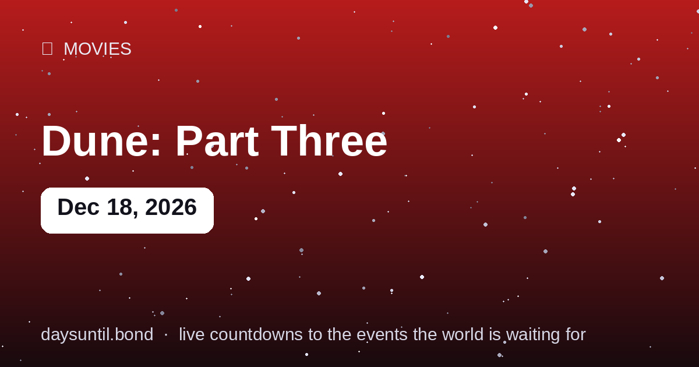

How Many Days Until Dune: Part Three?
Dune: Part Three falls on Friday, December 18, 2026.
The live counter above updates every second in your local time zone. The date and weekday are shown in the event details.

Quick facts
| North American release | Friday, December 18, 2026 |
|---|---|
| International rollout | Begins December 16, 2026 |
| Based on | Dune Messiah by Frank Herbert |
About Dune: Part Three
Dune: Part Three — also called Dune 3 — opens in North America on December 18, 2026; the international rollout begins December 16, 2026.
This countdown uses the North American release date. Local cinema listings may show an earlier or later opening depending on territory.
What Dune: Part Three adapts
The third film adapts Dune Messiah, Frank Herbert's 1969 sequel — the shortest and strangest of the novels he wrote himself. It opens twelve years after the events of the second film, with Paul Atreides ruling as Emperor and the holy war launched in his name having killed tens of billions across the universe. It is a deliberate inversion: where the first two books build a messiah, the second takes one apart.
That structure is why Denis Villeneuve has described the three films as a single arc rather than an open-ended franchise. The books that follow Messiah — Children of Dune, God Emperor of Dune — are a separate proposition, and nothing has been announced beyond this film.
Why the IMAX window matters
Dune: Part Three is listed among the December 2026 films designated as filmed for IMAX. That describes the film's presentation format; it does not establish a three-week exclusive IMAX window. Actual screen availability depends on local cinema bookings and distributor schedules.
It matters more for this film than for most. Villeneuve has been the most consistent advocate for large-format exhibition in mainstream cinema — Dune and Dune: Part Two were shot for IMAX, with aspect ratios that open up on IMAX screens — and the previous film's IMAX run sold out well ahead of general release.
A head-to-head release, and why both survive it
Two event films are currently scheduled for the same Friday, December 18, 2026. The effect on ticket availability and screen formats will vary by market, cinema and showtime; there is no basis to assume a fixed exclusive window without an announcement from the distributor or exhibitor.
For viewers planning to see both, compare local listings once tickets go on sale. Opening dates can be shared while showtimes and premium-format availability differ from one cinema to another.
The wider December 2026 window
| Date | Day | Release | Note |
|---|---|---|---|
| Nov 19, 2026 | Thursday | Grand Theft Auto VI | The attention competitor three weeks out |
| Dec 18, 2026 | Friday | Dune: Part Three | Filmed for IMAX; local screen allocation varies |
| Dec 18, 2026 | Friday | Avengers: Doomsday | Runtime not announced by Marvel |
| Dec 25, 2026 | Friday | Christmas Day | Traditionally the year's biggest box-office day |
Villeneuve's Dune so far
Dune arrived in October 2021 after a year's pandemic delay and grossed roughly $400 million worldwide against a $165 million budget, while winning six Academy Awards — all of them technical, for cinematography, editing, sound, score, production design and visual effects. Dune: Part Two followed in March 2024, was better reviewed, and roughly doubled the first film's gross at around $700 million worldwide.
The trajectory matters here: the second film was more commercially confident precisely because it was less expository, and Villeneuve has said throughout that the first instalment was the price of admission for the rest. A trilogy that ends with the strangest of the three novels is a bet that the audience built by the first two will follow.
Why these films are made for IMAX
Both previous films were shot for large format, with aspect ratios that open up on IMAX screens — sequences expand vertically from a letterboxed frame to fill more of the screen. It is not a marketing flourish: Villeneuve composes for the taller frame, and the digital IMAX and 70mm presentations genuinely show more image than the standard release.
The practical choice is to check the format and showtimes at your local cinema. Availability can differ by market and booking schedule, so confirm before planning around a specific screen.
Why Dune Messiah is the hard one
Herbert wrote Messiah as a correction. He had watched readers of the first novel treat Paul Atreides as a hero and had spent the sequel dismantling that reading — depicting the jihad waged in his name as a catastrophe, and the prescience that made him a messiah as a trap. It is shorter than Dune, more dialogue-driven, and deliberately anti-cinematic in places: much of it is court intrigue and interior argument rather than desert spectacle.
That is the adaptation problem, and it is why the film has been anticipated with more curiosity than simple excitement. A faithful Messiah cannot be a victory lap, and Villeneuve's record suggests he knows it.
Who is expected to return
The principal cast of the first two films is expected back: Timothée Chalamet as Paul Atreides, Zendaya as Chani, Rebecca Ferguson as Lady Jessica, and Florence Pugh as Princess Irulan, with Jason Momoa having played Duncan Idaho — a role that matters more in Messiah than it did in the earlier novels, and one he has publicly described as his favourite.
Messiah also introduces characters the films have not yet cast, including the face dancer Scytale and the Bene Gesserit plot at its centre. Because production has been unusually closed, treat any specific casting beyond the returning leads as unconfirmed until the studio announces it.
Does it end the story?
For this trilogy, yes. Villeneuve has been consistent that the three films cover Dune and Dune Messiah and that Messiah is where he stops — which is an unusual decision in a franchise era, and one that shapes how the film should be read. Rather than setting up the next instalment, it is built as a conclusion.
Herbert's later novels — Children of Dune, God Emperor of Dune and beyond — remain unadapted by this team, and nothing has been announced. That makes this the last Villeneuve Arrakis for the foreseeable future, which is worth knowing before you buy a ticket.
Dune 3 release date: North America and international openings
Searches often call the film Dune 3, but its official title is Dune: Part Three. Legendary lists the North American release for Friday, December 18, 2026, while the official film site says the international rollout begins on December 16. That means a single global date can be misleading: your local cinema may open the film before or after the North American date.
This countdown uses December 18, 2026, as the North American reference date. If you are outside North America, check the local distributor or cinema listing for the exact first showtime in your country. The studio can also revise territory schedules as release week approaches.
Your Dune: Part Three countdown milestones
It is easier to plan against fixed points than against a number that moves. These are the dates on which the countdown to Dune: Part Three passes each marker between now and the day itself — the last one falls on Thursday 17 December, when there will be 1 day left.
| Milestone | Day | Date | Remaining |
|---|---|---|---|
| 14 days | Friday | 04 December 2026 | 14 days to go |
| 7 days | Friday | 11 December 2026 | 7 days to go |
| 3 days | Tuesday | 15 December 2026 | 3 days to go |
| 1 days | Thursday | 17 December 2026 | 1 day to go |
How the remaining time breaks down
21 days is the headline, but it is rarely the number that helps. 15 of those are weekdays and 6 fall on a weekend, which is the split that matters if you are planning around work. It is 3 weeks and 0 days, or roughly 0.7 months, or about 504 hours.
| Unit | Until Dune: Part Three |
|---|---|
| Days | 21 |
| Weeks | 3 weeks and 0 days |
| Months (approx) | 0.7 |
| Weekdays | 15 |
| Weekend days | 6 |
| Hours | 504 |
| Sleeps | 21 |
Working days are Monday to Friday and do not subtract public holidays, which vary by country and employer — the full month-by-month split is on our weekday page for Dune: Part Three.